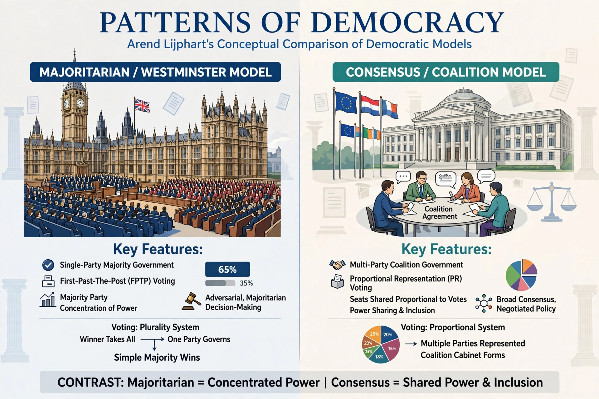

Patterns of Democracy: Government Forms and Performance in Thirty-Six Countries (1999; 2nd ed. 2012) is a book by political scientist Arend Lijphart comparing democratic institutions and their performance.

Lijphart distinguishes two models: the majoritarian (Westminster) model, concentrating power in single-party majority cabinets, and the consensus model, sharing power through coalitions, proportional representation and federalism. He classifies 36 democracies along two dimensions — executives-parties and federal-unitary — using ten variables.
Consensus democracies, Lijphart argues, perform at least as well on macroeconomic management and better on representation, turnout, women's representation, lower imprisonment and more generous welfare — his claim that consensus systems are "kinder, gentler" democracies sparked wide debate.
The book is a standard text in comparative politics, extending Lijphart's earlier work on consociational democracy in divided societies.